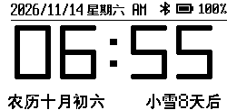
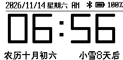
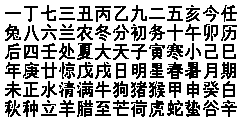

此用例选择每分钟更新，日常默认间隔仍为5分钟。数字补偿保持1.5.24。经用户单独授权，时钟局刷两个阶段将边框0x3C设为0xC0高阻，完整刷新及其他页面恢复原生0x05。LUT1全零代表源电平VSS，不能视为边框高阻。红色遮罩标记变化像素，是诊断图；白色表示未选中，不是设备页面。PNG来自编译RAM，不模拟电压、色深、残影或墨水显影。原生初始化代码、扫描、供电和脉冲参数不改。实际寄存器执行记录






下方是90个原生界面汉字的编译字形拼排，属于诊断表，不是设备页面。
